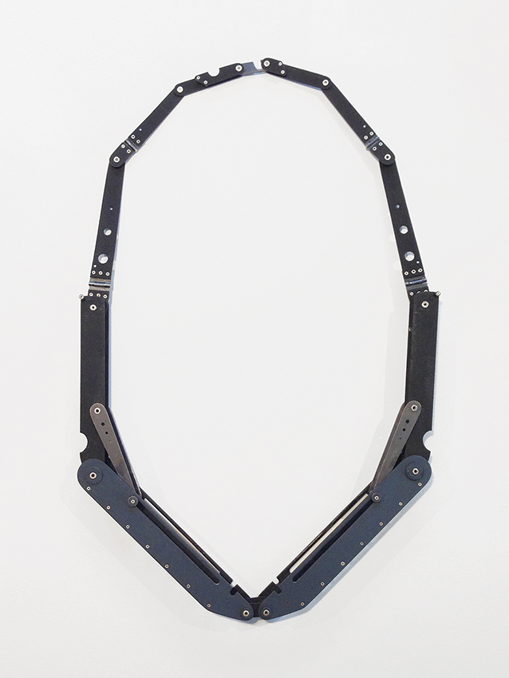
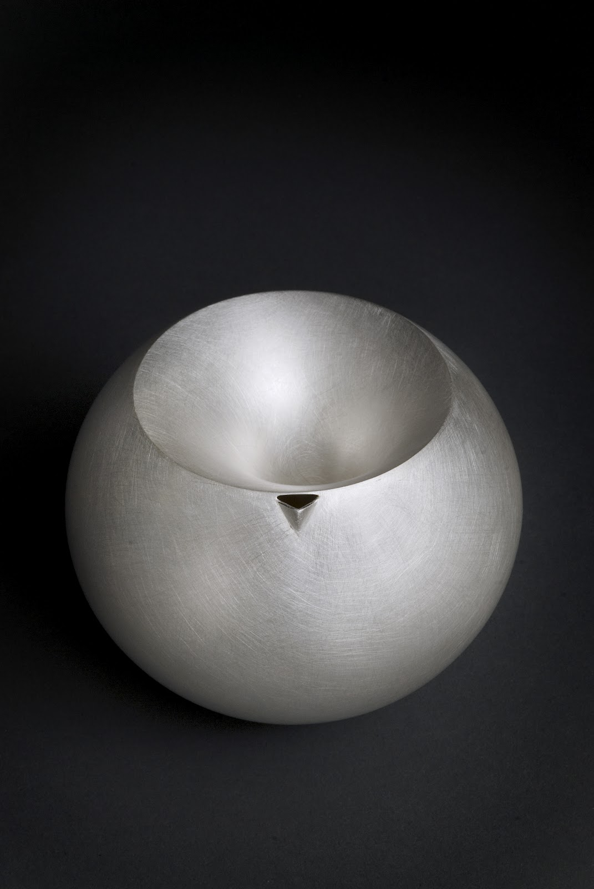
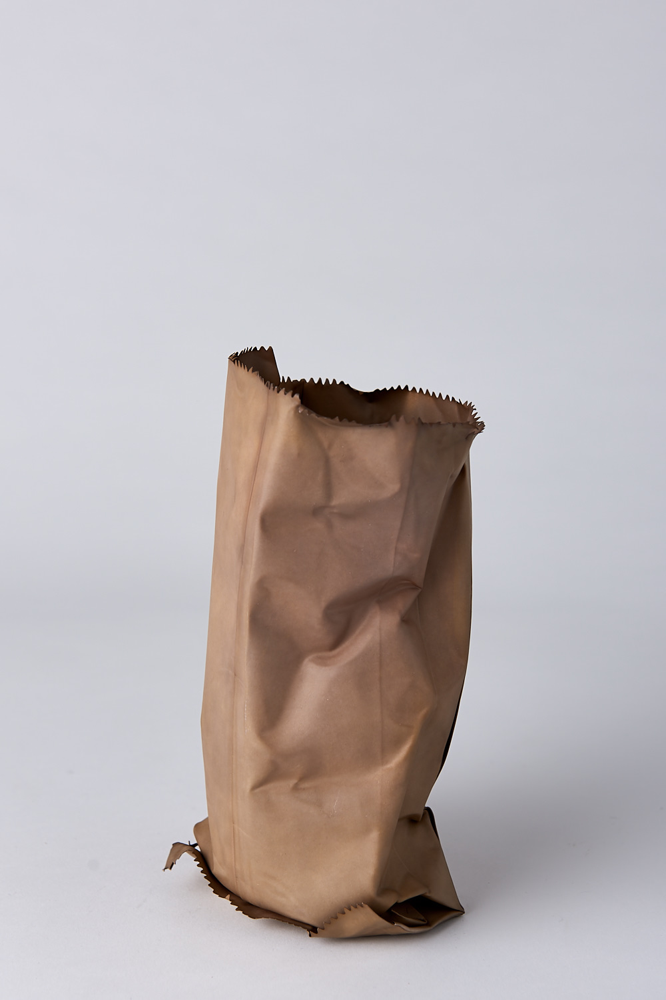

My Fave Makers
|  |
Katie CollinsA Melbourne-based Maker Machine objects have two modes: dormant and active. I am interested in the transformation of the object form one state to the other and in particular, the moments in between. Within the context of jewellery, my work aims to demonstrate this mechanical dance – the opening, unfurling and reveal – by engaging the wearer in this process of discovery. The wearer is invited to examine the action and tactility of the piece, giving it time and attention prior to placement on the body. It is hoped that this interaction will aid in the generation of a relationship between person and jewellery object. |
|  |
Adi TochA London-based Silversmith "Vessels and containers are an innate method of communication. They convey a story of gathering, holding, storing – not only do they surround us in our daily lives, they shape our perception of the division between inside and out, the notion of moving from one framed space into another. The practice of making vessels enables me to work both with metal and space as materials, thereby redefining these borders. I explore the morphological qualities of vessels and the process of embedding objects from the domestic landscape with spirit. My work communicates through its sensory qualities and invites the observer to pick it up or look closely before revealing its story."" |
|  |
David BielanderA Munich-based Jeweller and Silversmith “I aim to walk that fine line between making something simple enough that one unavoidably recognizes, that simultaneously requires a fair conscious effort to get beyond the obvious, and at the same time to be abstract enough that it allows a shift to happen, that the piece becomes something altogether new when it unpredictably connects with you.” David Bielander |